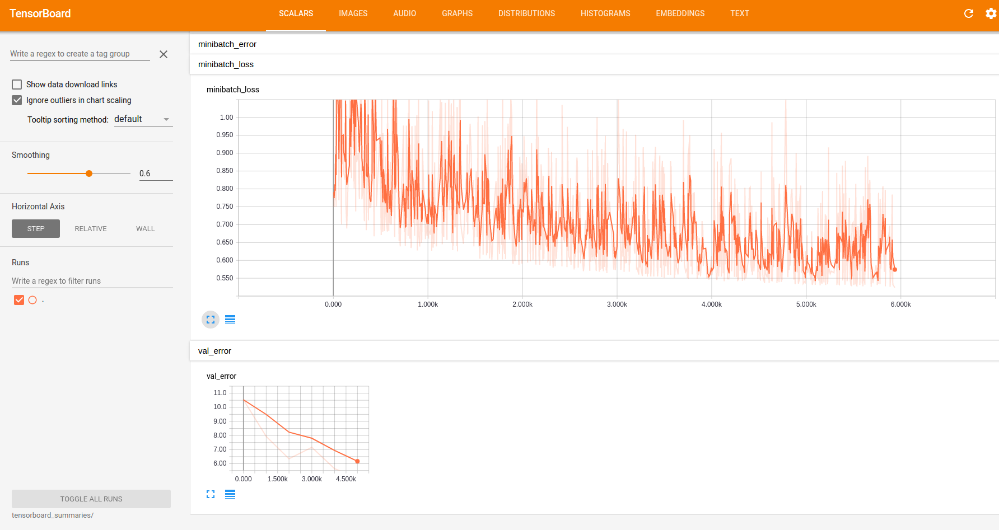

Training¶
The gqcnn package can be used to train a Dex-Net 4.0 GQ-CNN model on a custom offline Dex-Net dataset. Because training from scratch can be time-consuming, the most efficient way to train a new network is to fine-tune the weights of a pre-trained Dex-Net 4.0 GQ-CNN model, which has already been trained on millions of images.
To fine-tune a GQ-CNN run:
$ python tools/finetune.py <training_dataset_path> <pretrained_network_name> --config_filename <config_filename> --name <model_name>
The args are:
- training_dataset_path: Path to the training dataset.
- pretrained_network_name: Name of pre-trained GQ-CNN.
- config_filename: Name of the config file to use.
- model_name: Name for the model.
To train a GQ-CNN for a parallel jaw gripper on a sample dataset, run the fine-tuning script:
$ python tools/finetune.py data/training/example_pj/ GQCNN-4.0-PJ --config_filename cfg/finetune_example_pj.yaml --name gqcnn_example_pj
To train a GQ-CNN for a suction gripper run:
$ python tools/finetune.py data/training/example_suction/ GQCNN-4.0-SUCTION --config_filename cfg/finetune_example_suction.yaml --name gqcnn_example_suction
Visualizing Training¶
The gqcnn model contains support for visualizing training progress through Tensorboard. Tensorboard is automatically launched when the training script is run and can be accessed by navigating to localhost:6006 in a web browser. There you will find something like the following:
{kind=link}
Which displays useful training statistics such as validation error, minibatch loss, and learning rate.
The Tensorflow summaries are stored in models/<model_name>/tensorboard_summaries/.